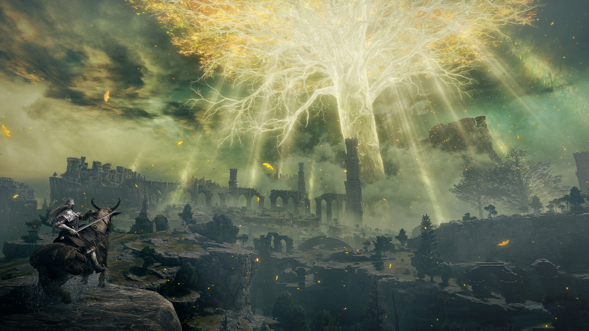

Autor: MT
Review: Elden Ring é jornada inesquecível por mundo fascinante

Situado majoritariamente em cenários abertos, Elden Ring passa uma sensação de liberdade
inacreditável.Tudo começa dentro de uma pequena caverna, na qual aprendemos o básico sobre o jogo. Depois de concluir o
tutorial, no maior estilo Zelda, você é jogado em Limgrave, uma das muitas regiões do mapa. A menos
desafiadora, digamos.
Sem ícones para guiar o jogador ou mesmo um menu de missões divididas entre principais e secundárias, as
Terras Intermédias funcionam de um jeito bem particular.
Céu vermelho em Elden Ring.
FromSoftware.
Você olha ao redor, encontra algo que lhe chama atenção e vai até lá para descobrir o que existe naquele
ponto.
Exceto por alguns tutoriais sobre mecânicas, já que esse é um soulslike mais democrático, raramente
aparece algo na tela além da bússola, que serve de guia para o jogador. Ter o horizonte à frente sem
poluição visual alguma é o que torna o mundo de Elden Ring ainda mais chocante.
Seja cavalgando pelas planícies de Limgrave ou atravessando os perigosos campos de guerra de Caelid, a
Térvore principal nunca deixa nosso campo de visão, se estendendo até o céu como um constante lembrete de
qual é o objetivo final.